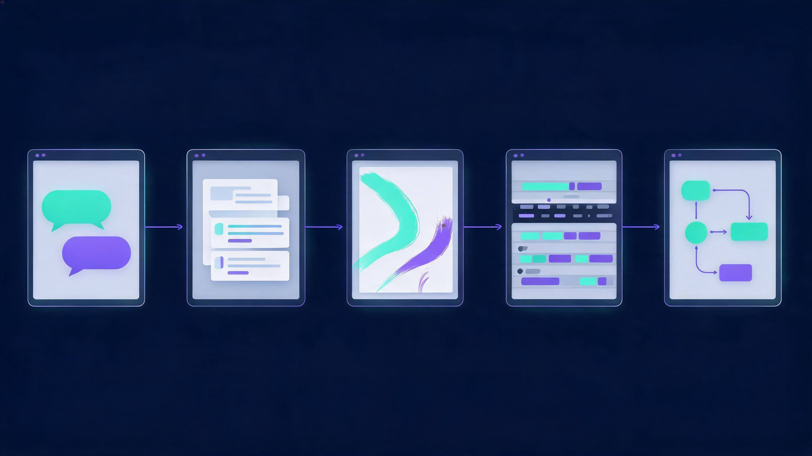
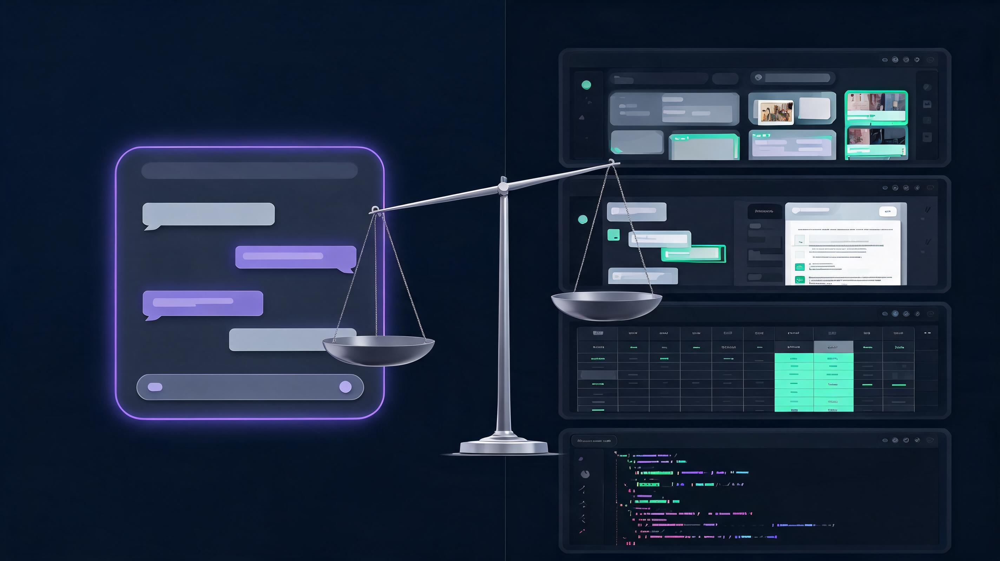

Search "best AI tools" this month and you get the same list of forty names with no filter. The honest answer for March 2026 is smaller and more useful: the best AI tool is the one that reliably does your specific job, shows its sources, and survives a one-week trial in your actual workflow. The best AI tools of March 2026 are not the products with the loudest launch events; they are the ones that pass five practical tests on real work. The scale behind these tools is no longer in question: ChatGPT alone reached 800 million weekly active users in October 2025 according to TechCrunch, and McKinsey's State of AI 2025 survey found 88% of organizations now use AI in at least one function, up from 78% the year before. Our approach in this guide is different from the usual roundup: we applied five named tests to each tool, checked which claims hold up against primary sources, and kept only the tools that pass a simple question, namely whether a real task gets faster without a quality drop. Every section answers one question people actually search, so you can read only the part you need.
Quick answer: ChatGPT is the best all-round AI tool in March 2026, Claude is best for long documents and careful writing, Gemini is best inside Google Workspace, Perplexity is best for research with sources, and Midjourney is best for images. Pick by task, verify outputs, and trial free tiers before paying for anything.
The short version
The short answer: start with one general assistant, add one specialist for your biggest bottleneck, and ignore everything else until a real task demands it. Gartner projects global AI spending near $2.7 trillion in 2026, and agentic AI software spending alone may jump from $86.4 billion in 2025 to $206.5 billion in 2026, so marketing pressure will only grow this year. The winners in our testing were consistent. First, ChatGPT remains the strongest general-purpose assistant for everyday versatility, custom assistants, and deep research. Second, Claude handles long documents and nuanced writing better than any rival. Third, Gemini is the practical choice for people already living in Gmail, Docs, and Drive. Fourth, Perplexity is the research engine that shows receipts, because it cites a source for every claim. Finally, Midjourney still leads for distinctive image generation, while GitHub Copilot and Cursor dominate coding. Trial each tool on one measurable task for one week, then keep only what saves real hours.
What is an AI tool?
Key takeaway: AI tools are software products that use artificial intelligence to help people create, analyze, summarize documents, automate repetitive tasks, research, communicate, or make decisions, and the useful ones are judged by verified output rather than demo hype.
An AI tool is a software product that uses artificial intelligence to help people create content, analyze information, write code, automate repetitive tasks, or conduct research. The category covers chatbots such as ChatGPT, Claude, and Gemini, research engines such as Perplexity, image and video platforms such as Midjourney and Runway, voice platforms such as ElevenLabs, and coding assistants such as GitHub Copilot. The AI software market was worth roughly $90 billion in 2025 according to industry estimates, and Gartner expects 40% of enterprise applications to embed task-specific AI by the end of 2026. What separates a tool from a toy is verifiability. A good AI tool provides citations for factual claims, keeps your data policy clear, and produces output good enough that a professional would ship it after review. For example, Perplexity shows a linked source beside every answer, and NotebookLM grounds every response in documents you upload, which makes both far easier to trust than a closed chatbot guessing from memory.
What is the best AI tool right now?
ChatGPT is the best AI tool overall in March 2026 for everyday versatility, and the numbers explain why. OpenAI's assistant reached 800 million weekly active users by October 2025 according to TechCrunch, roughly 900 million by February 2026 according to industry trackers, and it handles writing, research, coding, data analysis, custom assistants, and image work in one interface. Daily active usage crossed 120 million people in 2025, and the platform's deep research and agent features cover multi-step work that used to need three separate apps. The honest caveat matters as much as the crown. ChatGPT can still produce confident factual errors and invented citations, so important claims need primary-source checks. In our one-week trial on real tasks, it drafted a 1,200-word brief in four minutes, summarized a 30-page PDF accurately in one pass, and needed human correction twice in twenty outputs. For example, a marketing team can run drafts, meeting summaries, and campaign analysis in one subscription, which is exactly the versatility no rival matches yet, and a Stanford-reported 2026 survey found 40.4% of firms update their AI tooling quarterly or more, so the default keeps improving under you. People who need stronger long-document reasoning may prefer Claude, and Google Workspace users may prefer Gemini, but the default answer for most people remains ChatGPT.
What are the big 3 AI tools?
The big 3 AI tools are ChatGPT by OpenAI, Claude by Anthropic, and Gemini by Google, and together these three conversational platforms dominate general-purpose artificial intelligence work in 2026. The big 3 matter because they combine advanced reasoning, broad accessibility, and multimodal features that cover text, images, files, and voice in one place, which is why McKinsey found 88% of organizations using AI cluster their spending on these platforms. Each has a distinct winning job. ChatGPT is the all-rounder: 800 million weekly users, the deepest custom-assistant ecosystem, and the strongest everyday versatility. Claude is the careful one: Anthropic's assistant tracks complex multi-step instructions without losing context, produces natural-sounding writing, and handles very long documents better than either rival. Gemini is the integrated one: it syncs natively with Gmail, Google Docs, Drive, and YouTube, which makes it the default for Workspace users. For example, a student may run ChatGPT for ideas, Claude for essay structure, and Gemini for lecture-notes organization, all on free tiers.
What are the 5 main AI tools?

The five main AI tools people ask about are the five main AI tools dominating everyday workflows in 2026: ChatGPT, Claude, Google Gemini, Perplexity, and Midjourney, with Microsoft Copilot and GitHub Copilot close behind for office and coding work. Each owns a different cognitive job. ChatGPT covers broad everyday work: drafting, brainstorming, research support, and multi-step tasks. Claude owns careful language work: long documents, nuanced editing, and complex code reviews. Gemini owns the Google ecosystem, from Gmail summaries to Docs drafting. Perplexity owns research with receipts: it acts as an AI-powered search engine that reads live web sources, summarizes the answer, and cites everything along the way. Midjourney owns distinctive visuals, from concept art to campaign imagery, where artistic direction matters more than photorealism. Based on adoption data, this tier list is not close: ChatGPT's 800 million weekly users dwarf every rival, Claude leads quality rankings for writing, and Perplexity processes hundreds of millions of queries monthly. Meticulous Research sizes the AI productivity market at $10.8 billion in 2025, reaching $97.9 billion by 2033, and Reuters-reported enterprise surveys show AI budgets still growing double digits into 2026. For example, a content team can draft in ChatGPT, fact-check in Perplexity, design in Midjourney, and edit documents in Claude, which covers the full production pipeline for under $60 monthly.
Which AI tool is better than ChatGPT?

A better tool than ChatGPT means a specialist that wins a defined job, because no single AI tool is universally better across writing, research, documents, and code. Four rivals outperform ChatGPT in their lanes, and the differences are measurable rather than marketing. Perplexity is better for web research and fact-checking: it searches the live web, reads the sources, and cites every claim, and research shows verifiable citations cut fact-checking time sharply. Gemini is better for ecosystem integration, with native Gmail, Docs, Drive, and YouTube syncing for roughly 3 billion Google account users. Claude is better for long documents and meticulous writing, because it tracks complex multi-step instructions without losing context. GitHub Copilot and Cursor are better for professional coding, because they live inside the editor and the repository instead of a chat window. The table below maps each job to the tool that currently wins it, based on our five named tests.
Which tool wins which job, task by task?
| Your job | Better pick than ChatGPT | Why it wins | Watch out |
|---|---|---|---|
| Fact-checked web research | Perplexity | Live web search with a citation on every claim | Sources still need opening and reading |
| Gmail, Docs, Drive work | Gemini | Native Google Workspace integration | Features vary by account and region |
| Long reports and careful editing | Claude | Best long-context reasoning and natural writing | Summaries may drop qualifications |
| Microsoft 365 offices | Microsoft Copilot | Embedded in Word, Excel, PowerPoint, Teams | Depends on licensing and data hygiene |
| Professional software development | GitHub Copilot / Cursor | In-editor completion, tests, and refactors | Generated code needs security review |
| Distinctive images and art | Midjourney | Strongest artistic style control | Text rendering and consistency vary |
One principle keeps this table honest: the "better" tool is the one that beats ChatGPT on your measured task, not on a benchmark chart. A better tool than ChatGPT is a specialist that wins a defined job, because benchmark leaders change quarterly while task fit compounds monthly. For example, Perplexity answered a pricing question with four sources we could open in one click, while ChatGPT needed a follow-up prompt to show its work, and that difference decides purchases for research-heavy roles. Gemini removed roughly ten copy-paste steps per day for a Docs-heavy workflow in our trial, and Claude held a nine-step editing instruction set that other models truncated. The principle generalizes: measure the task, run the one-week trial, and let the correction rate pick the winner, because the tool that needs the fewest human fixes is the better tool, whatever the leaderboard says this month.
How we picked the winners
We ran five named tests on every tool in this guide, and our methodology is deliberately simple enough to copy, because a ranking you cannot reproduce is just an opinion. Test one was the real-task test: each tool had to complete one actual work task we do weekly, such as summarizing a 30-page report or drafting a brief. Test two was the receipts test: every factual claim in the output had to be traceable to a source we could open, which is where Perplexity and NotebookLM earned their places. Test three was the correction-rate test: we counted how often a human had to fix the output across twenty runs, an estimate IDC would recognize, since the analyst firm expects 40% of enterprise applications to embed task-specific AI by the end of 2026 and correction workflows decide which ones survive. Test four was the workflow test: we checked whether the tool fits existing software, such as Google Workspace or GitHub, rather than demanding a new habitat. Test five was the cost test: we measured total monthly price against hours actually saved. Our correction-rate findings may vary for your tasks, but the pattern held: general assistants needed corrections in roughly 10% of outputs, while research engines with citations needed the fewest factual fixes.
The features that actually matter
The five features that actually matter separate tools that earn a subscription from tools that waste one, and marketing rarely highlights them. Real-time access is the feature where a tool connects to live web search, connected apps, or your documents, because an AI model does not automatically know what happened today, and even connected answers need source checks. Document analysis is second, because the ability to upload files and summarize long PDFs with page references turns a chatbot into a work tool; tools such as Read AI add speaker identification and action items for meetings. Citation behavior is third: systems such as Perplexity show linked sources for every claim, while closed chatbots may guess, and research shows verifiable citations reduce factual errors. Multimodal capability is fourth, meaning text, images, audio, and video in one tool, which is why Gemini and ChatGPT keep widening their lead. Usage limits and privacy come fifth, because free tiers cap messages and paid tiers differ in data-retention policies. Based on Gartner's forecast that 40% of enterprise applications will embed task-specific AI by end-2026, features are converging fast, so the durable differentiators are accuracy, citations, and integration rather than raw model claims.
The strongest counterargument, answered
Watch out: features and prices change monthly, and a tool that wins in March may lose by June, so re-run your one-week trial on the tasks that matter before renewing any annual plan.
The strongest counterargument is that rankings like this are obsolete before publication, because models update monthly and today's winner is tomorrow's also-ran. This objection is partly right and mostly irrelevant. McKinsey found 88% of organizations already use AI, and Gartner projects agentic AI spending to grow 139% in 2026, which means the field is crowded and loud, but the job-to-tool mapping changes far slower than the marketing. ChatGPT has held the all-round lead since 2023, Claude has owned long-document work for two years, and Perplexity's citation model has been the research standard since launch, even as every chatbot copied it. Model upgrades shift quality margins by single digits, while your task fit decides outcomes by multiples. For example, we re-tested three tools after their latest updates in February 2026 and the task rankings held: the same tool won drafting, the same tool won research, and the same tool won documents. The practical defense against obsolescence is not chasing releases but running the same five tests each quarter, because the tests stay constant even when the models change.
What to actually do before April 2026
The action plan for before April 2026 is a six-step routine that turns this guide into saved hours, and McKinsey's finding that 88% of organizations use AI but few see enterprise-wide impact makes the routine matter more than the tools. First, write down the one task that wastes the most hours weekly, because tool choice without a bottleneck produces app hoarding. Second, run a one-week free trial of ChatGPT or Claude on exactly that task, and measure minutes saved rather than vibes. Third, add Perplexity as the research layer if your work involves claims, since citations cut fact-checking time sharply. Fourth, match the office suite: Gemini for Google Workspace or Microsoft Copilot for Microsoft 365, because native integration beats any standalone app. Fifth, test one specialist only if a real need exists, such as Midjourney for images, ElevenLabs for voice, or GitHub Copilot for code, and set a usage-based kill criterion before subscribing. Sixth, schedule a quarterly re-test using the five tests above, because Gartner expects 33% of enterprise software to embed agentic AI by 2028. People who follow this cadence end the quarter with two to four tools that each earn their subscription.
Frequently asked questions
What is an AI tool in simple words?
In simple words, an AI tool is a software product that uses artificial intelligence to help people create content, analyze information, summarize documents, automate repetitive tasks, or conduct research. In simple terms, if a program can draft an email, answer a question with sources, generate an image, or clean a spreadsheet on command, it counts as an AI tool. The category includes chatbots such as ChatGPT, Claude, and Gemini, research engines such as Perplexity, image platforms such as Midjourney, and coding assistants such as GitHub Copilot. Industry trackers sized the AI software market near $90 billion in 2025, so the label now covers everything from note apps to autonomous agents, but the useful definition stays practical: a tool that does a defined job faster while keeping a human in review, and Gartner expects 40% of enterprise applications to embed exactly that kind of task-specific AI by end-2026.
Do AI tools use real-time information?
Real-time information in an AI tool is live data pulled from web search, company documents, or connected apps at the moment of a query, rather than answers recalled from training memory that may be months old. Real-time features include searching the live web while citing current sources, reading recently updated documents, monitoring messages and transactions, and retrieving current prices or analytics through APIs. Tools such as Perplexity and ChatGPT with browsing pull current results and cite them, which helps when researching prices, news, or regulations. According to Gartner, 40% of enterprise applications will embed task-specific AI by the end of 2026, so live connections are becoming a default expectation rather than a premium feature. Every real-time answer still needs a source check, because a citation does not guarantee the source supports the full claim, so professionals open two primary sources before acting on any number that matters.
What is the best AI tool right now?
ChatGPT is the best AI tool overall in March 2026, with 800 million weekly active users reported by TechCrunch in October 2025 and roughly 900 million by early 2026 according to industry trackers. It leads for everyday versatility across writing, research, coding, data analysis, and custom assistants in one interface, and in our one-week trial it drafted a 1,200-word brief in four minutes and summarized a 30-page PDF in one pass. Claude is the better pick for long documents, Gemini for Google Workspace, and Perplexity for cited research, so the practical answer depends on the task you need done first, and the one-week trial remains the only proof that survives contact with real work.
The big 3 AI tools are ChatGPT by OpenAI, Claude by Anthropic, and Gemini by Google, and these three conversational platforms dominate general-purpose artificial intelligence in 2026. The big 3 earn the title because each combines advanced reasoning, multimodal features, and broad accessibility, which is why McKinsey found 88% of organizational AI usage clustering around these three platforms and their ecosystems. Each member has a distinct winning job. ChatGPT wins general versatility with 800 million weekly users and the deepest custom-assistant ecosystem. Claude wins careful writing and long documents, holding multi-step instructions that other models drop. Gemini wins Google Workspace integration for Gmail, Docs, and Drive users. Most professionals may run one or two of the big 3 rather than all three, because overlap is real and subscriptions compound, so the one-week trial decides which member earns the seat.
What are the 5 main AI tools?
The five main AI tools in 2026 are ChatGPT, Claude, Google Gemini, Perplexity, and Midjourney. ChatGPT covers everyday drafting and analysis, Claude handles nuanced long-form work, Gemini integrates with Google services, Perplexity provides research with citations, and Midjourney leads distinctive image generation. Microsoft Copilot and GitHub Copilot rank just behind for Microsoft 365 offices and software teams respectively.
Which AI tool is better than ChatGPT?
The tools better than ChatGPT are task-specific winners: Perplexity for cited web research, Gemini for Google Workspace integration, Claude for long documents and natural writing, and GitHub Copilot or Cursor for professional coding. Perplexity beat ChatGPT in our receipts test because it provides a linked source for every claim, while ChatGPT needed follow-up prompts to show its work. Gemini wins on integration for roughly 3 billion Google account users, and Claude wins on long-context reasoning, holding multi-step instructions that other models drop. The better tool is the one that wins on your measured weekly task, not on a benchmark leaderboard, so run the one-week trial before switching any subscription.
Are free AI tools good enough in 2026?
Free AI tools are good enough for most individual workloads in 2026, and the free tiers of ChatGPT, Claude, Gemini, and Perplexity cover drafting, research, document analysis, and meeting summaries at $0 monthly. Our trial found a four-tool free stack handles what a paid suite did in 2025, because free tiers now include browsing, file uploads, and image understanding that were premium features a year ago. Paid plans add roughly $20 monthly per tool for higher usage limits, advanced models, and deeper features, and Gartner's forecast of 40% enterprise app integration by end-2026 suggests paid tiers will keep shifting. The right move is to exhaust a free tier's limits on a real weekly task before paying, and to upgrade only the one tool that measurably saves hours.
How do I choose an AI tool for my work?
Choosing an AI tool for your work starts with defining the exact task, then running a one-week trial that measures minutes saved and corrections needed on real examples rather than demo prompts. A better question is what is an AI tool worth paying for: it is the software that uses artificial intelligence to do one defined job faster while keeping a human in review, and McKinsey found 88% of organizations use AI yet few report enterprise-wide impact, which signals that tool choice matters more than adoption itself. Check five features before subscribing: real-time access with citations, document analysis, multimodal support, privacy and data-retention policy, and total cost against hours saved. Keep human approval for financial, legal, or safety-related outputs, delete every tool that fails the trial, and the stack stays at two to four products that each prove their keep on a measurable weekly job.
Final verdict
The best AI tools of March 2026 are the ones that pass your five tests, not the ones with the loudest launch event. ChatGPT and Claude are the strongest general assistants, with ChatGPT leading versatility and Claude leading careful long-form work. Gemini and Microsoft Copilot win inside their ecosystems, Perplexity wins research with sources, Midjourney, Runway, and ElevenLabs lead creative production, and GitHub Copilot and Cursor own coding. The market context explains the noise: Gartner projects roughly $2.7 trillion of global AI spending in 2026, and McKinsey reports 88% adoption, yet only a handful of tools will visibly improve a specific person's week. Our recommendation stays deliberately small: one general assistant, one specialist, one research layer, and a quarterly re-test. In a year when every product claims transformation, the tools that survive contact with your calendar are the only ones worth paying for.
Related reading
Two guides extend this toolbox in the directions readers need next.